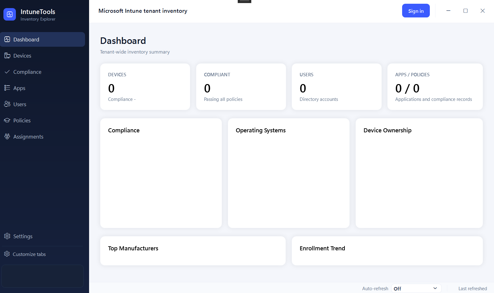

Scroll to explore

http://localhostIn your new app registration go to API permissions → Add a permission → Microsoft Graph → Delegated permissions and add:
Click Grant admin consent for your tenant (requires Global Admin or Privileged Role Admin).
In the same folder as IntuneTools.exe, open or create appsettings.json:
{
"ClientId": "xxxxxxxx-xxxx-xxxx-xxxx-xxxxxxxxxxxx",
"TenantId": "common"
}ClientId — the Application (client) ID from Step 1.TenantId — use "common" for any tenant, or your specific tenant ID to restrict sign-in.